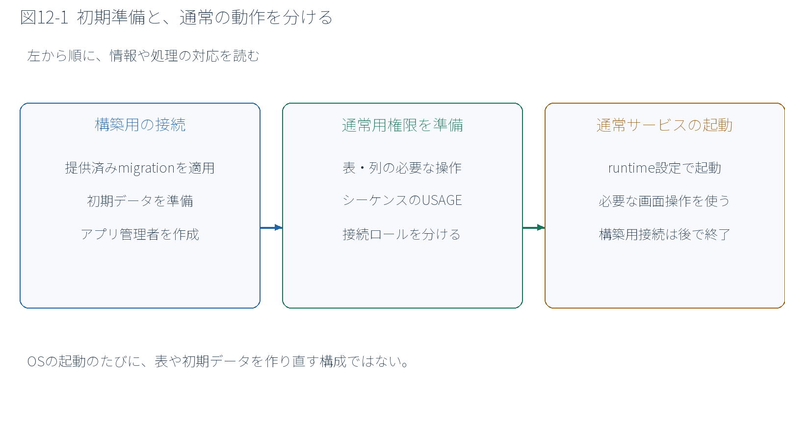
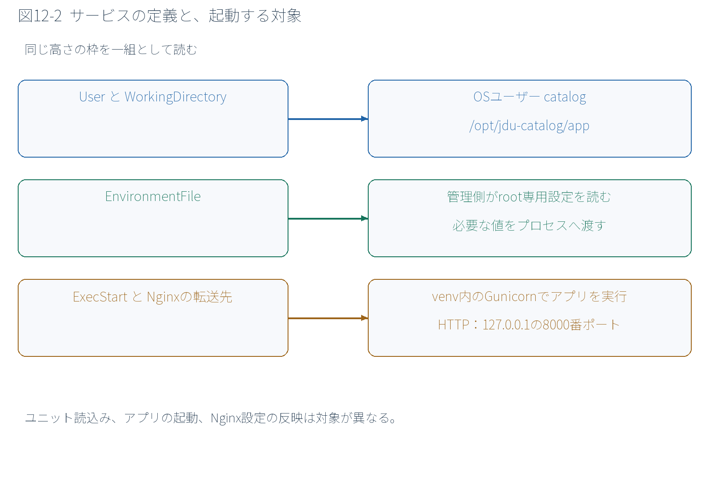

第12章 提供アプリの配置と初期設定
この章で分かること
提供アプリのファイルをWebサーバーへコピーするだけでは、備品一覧は動かない。アプリが使うPythonのパッケージ、接続先の設定、DBの表、起動するユーザー、Nginxの入口もそろえる必要がある。
第11章では、ブラウザ、Nginx、Gunicorn、アプリ、DBが連携する仕組みを説明した。本章では、そのアプリを動かすために、Webサーバーへ何を用意し、DBへどのような準備をするかを説明する。練習・課題5では、これらの設定を行い、提供アプリがDBを利用して動く状態を作る。
12.1 コード、依存、設定、データを分ける
コードは、一覧の取得や保存などの処理を記述したプログラムである。依存パッケージは、そのプログラムが利用するDjangoやDB接続のライブラリなどである。設定は、接続先DBや実行時に使う値である。データは、DBへ保存した備品や管理者などの情報である。
| 種類 | 今回の主な保存先 |
|---|---|
| 提供アプリのコード | Webサーバーの/opt/jdu-catalog/app |
| Pythonの実行環境と依存 | Webサーバーの/opt/jdu-catalog/venv |
| 通常アプリの秘密設定 | Webサーバーの/etc/jdu-catalog/app.envなど |
| 配信用CSSなど | Webサーバーの/var/lib/jdu-catalog/static |
| 備品などのDBデータ | DBサーバー上のPostgreSQLが管理するデータベース |
12.2 アプリ専用のPython環境を用意する
提供アプリを動かすには、DjangoやGunicornなど、アプリが使うPythonのパッケージも必要になる。venvは、これらのパッケージをアプリ専用に用意し、Ubuntu OS側のPython環境と分けて管理する仕組みである。同じWebサーバー内にディレクトリとして作成する。Pythonのvenv
今回は、Webサーバーの/opt/jdu-catalog/venvにvenvを作り、内部の配布サーバーに用意された指定版のパッケージを導入する。アプリが使う版をそろえることで、提供されたコードに合う環境を用意できる。
初期準備には/opt/jdu-catalog/venv/bin/pythonを、サービスの起動にはこのvenv内のGunicornを使う。どのPython環境で処理を動かすかは、実行するファイルのパスで指定する。
12.3 管理するユーザーと、動かすユーザーを分ける
コードとvenvはrootが管理し、通常のアプリはcatalogという専用のOSユーザーで動かす。catalogは、コードを読み、必要な処理を実行するが、コードや依存パッケージを自由に書き換えるユーザーにはしない。
実行ユーザーがコードまで変更できると、アプリの処理を通じて想定外の変更が起きた場合に、次回起動する内容へ影響が残る。実行する権限と、配置した内容を管理する権限を分ける理由はここにある。
Nginxが返すCSSなどは、collectstaticという処理で配信用ディレクトリへ集める。コードの保存先、静的ファイルの配信先、秘密設定の保存先を、それぞれの用途で分ける。秘密設定を静的ファイルの配信範囲へ置かない。
12.4 アプリからDBへ接続するための設定
ここからは、備品管理アプリがDBを利用するための準備を説明する。まず、Webサーバー上のアプリに、どのDBサーバーの、どのデータベースへ、どのDBロールで接続するかを設定する。設定する場所はWebサーバーであり、接続する相手はDBサーバーである。
このDB接続設定には、接続先を選ぶ値と、認証に使うパスワードが含まれる。
| 項目 | 選ぶもの |
|---|---|
| DB_HOST | 接続先DBサーバーの名前 |
| DB_PORT | 接続先のポート番号 |
| DB_NAME | 利用するデータベース |
| DB_USER | 通常動作で使うDBロール |
| DB_PASSWORD | そのロールの認証に必要な秘密 |
例えばDB_HOSTが正しくても、DB_NAMEやDB_USERが別の環境を指していれば、目的の備品は取得できない。接続先、データのまとまり、実行者を一組で読む。
今回の秘密設定は、root所有で0600の通常ファイルとして保存する。catalogユーザーが秘密ファイル全体を直接読めるように、権限を広げる構成にはしない。
systemdのシステム側の管理機能がEnvironmentFileの値を読み、実行するプロセスへ必要な環境変数として渡す。初期準備用の補助処理も、管理権限で設定を読んだ後、許可した処理をcatalogユーザーの権限へ落として行う。ファイルを読む権限と、プロセスが必要な値を受け取る仕組みを分けて考える。systemdの実行環境
秘密は画面へ全文表示せず、設定検査の結果と、ファイルの所有者・権限を読む。DB用、RDP用、アプリ管理者用のパスワードも、それぞれ別の認証に使う。
12.5 DBに表・初期データ・アプリ管理者を準備する
次に、接続先のDBの中へ、アプリが使う表と初期データ、アプリ管理者の情報を用意する。今回の準備処理はWebサーバー上で実行し、その処理がDBサーバーへ接続して表やデータを作る。
マイグレーションは、アプリが必要とする表などの構造を、指定された定義に沿ってDBへ適用する仕組みである。今回は提供済みの定義を使い、構築用ロールで必要な構造を作る。Djangoのマイグレーション
表を作ることと、表の中へ備品データを入れることは異なる。seedは用意された初期データを投入する処理であり、管理者作成はアプリの管理画面へ入る担当者を用意する処理である。それぞれの対象を区別する。

図12-1 一度行う初期準備と、通常のサービス起動。 通常の起動のたびに、初期データや管理者を作り直す構成ではない。
既存のデータがあるときに初期投入を繰り返すと、重複や上書きの原因になる。提供された補助処理が既存状態を検出した場合は、その状態を読み、DBを削除して最初からやり直す操作へ置き換えない。
12.6 構築用と通常用のDBロールを切り替える
構築用ロールには、表などの構造を作るための権限が必要である。しかし、毎回の一覧取得や管理画面の保存に、同じ構造変更権限が必要なわけではない。
表の準備後には、通常アプリ用ロールへ必要なSQL権限を付ける。備品のSELECT・INSERT・UPDATE、補助表の用途に応じた操作、必要なシーケンスのUSAGEなどを分ける。通常ロールを所有者やsuperuserへ変更して、権限不足をまとめて解消する方法にはしない。
通常のサービスがどちらのロールを使っているかは、runtime設定のDB_USERと、接続したDB側の実行者を対応させて読む。構築用接続の終了は、第13章で扱う。
12.7 systemdとNginxの起動設定を対応させる
ユニットファイルは、systemdにサービスの起動方法などを伝える定義である。今回のjdu-catalog.serviceには、実行ユーザー、作業場所、秘密設定の読込み、Gunicornの起動方法が含まれる。
設定の説明例：配布ユニットの主要な項目の抜粋。
User=catalog
WorkingDirectory=/opt/jdu-catalog/app
EnvironmentFile=/etc/jdu-catalog/app.envUserはOSの実行ユーザー、WorkingDirectoryは作業場所、EnvironmentFileは起動時に読み込む設定ファイルである。ExecStartではvenv内のGunicornと、実行するアプリ、127.0.0.1:8000の待受を指定する。

図12-2 定義を読み、動いている対象と照合する。 ユニットを配置してsystemdへ読み込ませる操作、アプリの起動、Nginx設定の反映は、それぞれ対象が違う。
systemctl daemon-reloadはsystemdにユニット定義を読み直させる。NginxのreloadはNginxの配信・転送設定を再読み込みする。アプリの設定変更をサービスのプロセスへ反映する場合は、対象サービスを再起動するなど、その設定の読込み時点に合わせる。
Nginxでは、公開側と管理側の入口、静的ファイル、アプリへの転送を対応させる。以前作った静的URLも保持し、アプリ導入後に既存の配信が失われていないことを読む。
12.8 practiceとmissionで使う設定を切り替える
今回のprofileは、練習用のpracticeと本課題用のmissionの設定のまとまりを区別する名前である。共通の提供コードを使いながら、接続するDB、DBロール、管理者、保存した備品を分ける。
| 対象 | 切替で意識すること |
|---|---|
| コードとvenv | 同じ提供版を使う。profileの変更だけで再配置を繰り返さない |
| DB名とロール | 練習用と本課題用で、接続する組を切り替える |
| 一時構築用設定 | そのprofileの準備だけに使用し、完了後に終了する |
| 起動中のアプリ | 古い接続設定を使い続けないよう、停止・明示切替・再開を対応させる |
現行の演習は、P5で練習アプリを動かした後、P6で練習側の構築用接続を終了してからM5へ進む。順序はP5 → P6 → M5 → M6である。practiceの一時setup設定を残したままmissionへ重ねるのではなく、前の構築段階を終えてから次のprofileを選ぶ。
練習・課題5では、コード、依存、設定、DBの準備とサービスを一組にする。次の第13章では、必要な動作を保ちながら公開範囲と権限を絞る。
章末問題
問1
提供アプリに必要なPythonパッケージを、アプリ専用のvenvへ用意するのはなぜか。
問2
通常アプリを構築用ロールで動かし続けないのはなぜか。
問3
秘密設定がroot専用であるとき、catalogユーザーのプロセスへ必要な値はどう渡されるか。
問4
practiceからmissionへ切り替えるとき、同じコードを使っていればDB名とロールを意識しなくてもよいか。
章末解答
問1
Ubuntu OS側のPython環境と分けて管理し、アプリが使うパッケージを提供コードに合う指定版でそろえるためである。
問2
通常動作に不要な構造変更などの権限が残るためである。通常用へ必要な操作だけを許す。
問3
systemdの管理側や許可された準備処理が設定を読み、必要な値を環境変数として実行プロセスへ渡す。秘密ファイルの読取り権限を広げることで実現する構成ではない。
問4
意識する必要がある。共通のコードでも、選んだDBとロールによって読み書きするデータと権限が変わる。
参考資料
確認日：2026-11-13。配置・profile・権限の説明は提供アプリと現行P5/P6の構成に基づく。
・ 提供アプリ
・ 練習P5
・ 練習P6